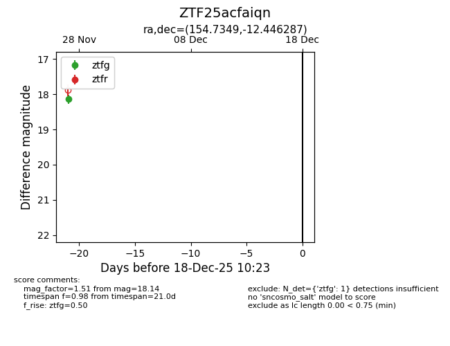
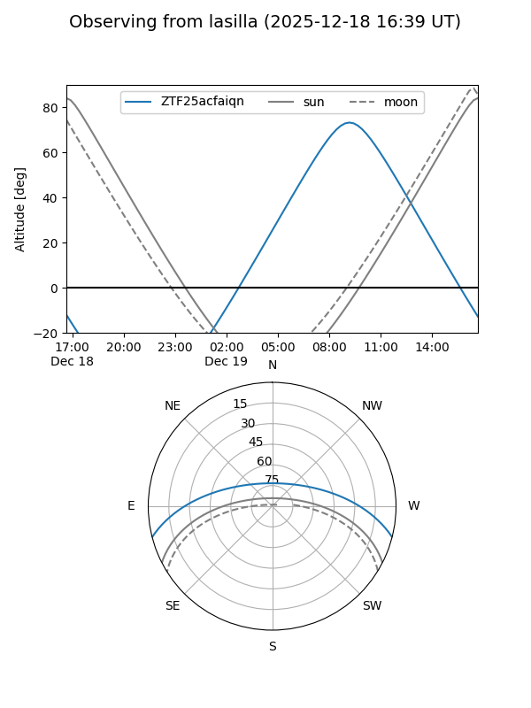
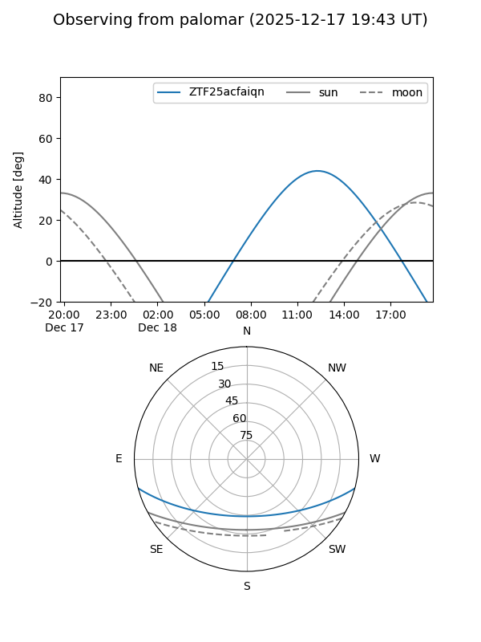

ZTF25acfaiqn
Target ZTF25acfaiqn at 2025-12-18 11:17
Aliases and brokers:
FINK: fink-portal.org/ZTF25acfaiqn
Lasair: lasair-ztf.lsst.ac.uk/objects/ZTF25acfaiqn
ALeRCE: alerce.online/object/ZTF25acfaiqn
alt names
ZTF25acfaiqn (ztf,fink_ztf)
Coordinates:
equatorial (ra, dec) = 154.7349,-12.44629
equatorial (HMS+DMS) = 10:18:56.37,-12:26:46.63
galactic (l, b) = (254.8936,+35.83106)
Photometry
last ztfg=18.14
1 ztfg detections
Lightcurve

Visibility


Additional plots